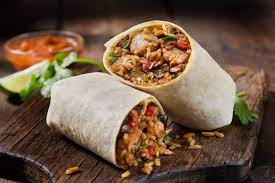

Recipe for Burrito

Description
A burrito is a dish in Mexican and Tex-Mex cuisine that took form in California cuisine, consisting of a flour tortilla wrapped into a sealed cylindrical shape around various ingredients.
The tortilla is sometimes lightly grilled or steamed to soften it, make it more pliable, and allow it to adhere to itself.
Ingredients
- 2 pounds beef skirt steak, cut into thin strips
- 2 tablespoons carne asada seasoning
- 1 tablespoon garlic powder
- 1 tablespoon vegetable oil
- ½ sweet onion, diced
- 1 red bell pepper, seeded and chopped
- 1 jalapeno pepper, seeded and diced
- 1 (14.5 ounce) can Hunt's® Diced Tomatoes, drained
- 2 cups frozen diced potatoes
- salt and pepper to taste
- 3 tablespoons butter, divided
- 6 eggs, whisked
- 2 cups shredded Mexican cheese blend
- 4 (12 inch) flour tortillas
Steps
- Place beef slices in a mixing bowl. Sprinkle with asada seasoning and garlic powder; toss in bowl to evenly coat. Let marinade 5 minutes.
- Heat oil in a large, deep skillet over medium-high heat. Place beef strips in skillet and cook and stir until browned. Stir in bell pepper, onions, and jalapeno pepper. Add tomatoes and potatoes. Cook mixture until potatoes are tender, 5 to 8 minutes. Season with salt and pepper. Transfer mixture to a bowl.
- Melt 1 tablespoon butter in the same skillet. Add the eggs, stirring occasionally, until eggs are scrambled and set. Transfer the beef mixture back to skillet. Cook and stir until warmed through, about 2 minutes. Melt the remaining 2 tablespoons butter in a small dish in microwave.
- Divide shredded cheese among tortillas; divide beef and veggie mixture and place on the cheese. Fold in sides of tortilla and roll up. Brush with melted butter and place folded side down in pan to brown; flip and brown on top side. Burrito should be warmed though.